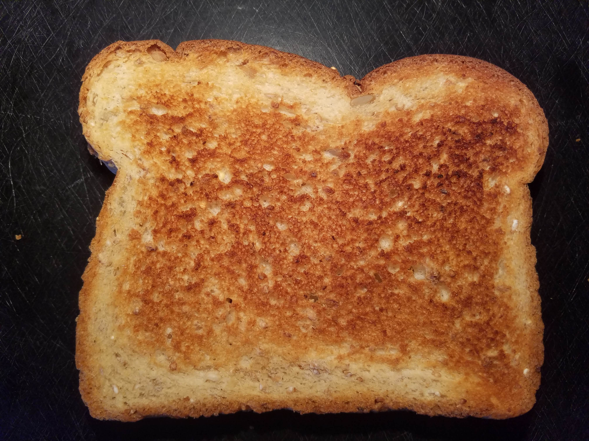

Week 5: 3D Design & Printing
For this week's project, I designed and printed Navi from the Legend of Zelda franchise.
The design process was fairly straightforward. Most notably, I angled the wings and added a bevel so they taper off at the end. I was able to print the model (with supports) on the MK3S model 3D printer in the maskerspace using PrusaSlicer, painstakingly remove the supports from behind the wings using a pair of pliers, and smoothen some of the rougher edges using sandpaper.
One problem I ran into was the fact that the smaller set of wings had very little overlap with the spherical body and I was afraid that they would snap while I was trying to remove the supports attached to them. Luckily this did not happen, but going forward I will be more careful when designing and 3D printing smaller objects. This was one con of 3D printing the object.
That said, there were several pros of 3D printing my object as well. Firstly, using an additive approach allowed me to generate a complex object that had individual parts lifted above the print surface. As mentioned before, the wings were angled. Because they only contacted the base at single point, using another approach (ex. subtractive) would have been difficult because it would also involve removing the material under the wings. Also, the body of the object was spherical and it would have been difficult to replicate that geometry using other methods. Lastly, with 3D printing I could control the density of support material inside the sphere (infill) and generate a lighter final product as compared to other fabrication methods.
Here are some photos of the process:
And here are the files for download:
My project will likely not use a lot of 3D printing elements, but I am currently working on designing the floor of the elevator which I want to add a pressure plate to. Also, I am working on a mechanism so that I can potentially automate the opening and closing of the door of the pet elevator (like a drawbridge). This means modeling a hinge and also a pulley system that will function in tandem with the pressure plate. I am still working out the details, however, and will post an update to my progress once I complete an aspect of the pet elevator. Stay tuned for more updates!
Another aspect of this week's project was taking a scan of something using a photogrammetry application. I decided to take a scan of a piece of toast laid on its side because I thought the texture was really cool and wanted to see if the scan would pick up on it. To this end, I took 118 pictures of the same piece of bread from different angles and imported them into a demo version of Agisoft Metashape (listed on the website as "PhotoScan"). Following the instuctions in the user guide, I aligned the photos first. I found, however, that almost all the pictures taken from the side that included the crust were not matched and needed to be realigned. I tried realigning this subset of photos several times without any luck, so the tie point cloud unfortunately did not have any depth. It did, however, capture the curvature of the top surface of the toast, which I found interesting.
Here is a picture of the tie point cloud:
Curious if this was just a quirk of the application, I also tried using the VisualSFM application with the same set of images. Unfortunately, the result was far worse than what I had seen in Agisoft Metashape so I decided to stick with the latter.
Additionally, I tried running the alignment in Agisoft Metashape using different accuracies and found that "High" worked significantly better than the lower settings, even though it took significantly longer. I then attempted to generate depth maps hoping that maybe the program would then account for the depth of the toast (height in the z-axis) instead of just the top surface. This took significantly longer than I anticipated, however, and after upwards of four hours, I was able to generate a dense point cloud (which unfortunately also lacked significant depth):
This looks a striking lot like the original piece of toast:
I then generated a mesh. You can see the curvature and the rough texture of the toast clearly:
I would have included the file, except the program would not let me save it unless I activated it first (again, I was currently using a demo version of the software):
That's a bummer for sure, but I still think it was really cool!
Anyways, that is all for this week. Thank you!
Powered by w3.css
Mohammed Mutaher 2022